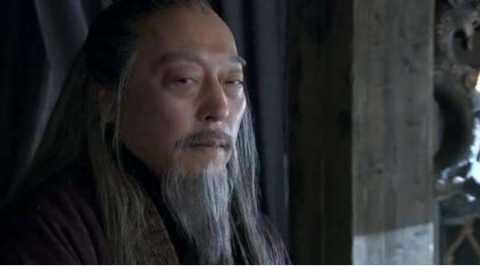

《三国演义》曹操雄霸天下，也怕这三人，第三人还将他大业偷走
说到曹操，大家对他的评价是有着很大的说法。首先他的人品还是很差，同时性格也是让很不敢恭维。历史上的他，是喜怒无常还有着很深的猜疑心，动不动的就要杀人，还有过屠城的想法，这些行为简直就是残暴不仁。所以我们大家对于他自然是没有什么好感，但他能力还是不用质疑。
曹操当时就像成就一番雄伟大业，自然是有着不低的能力，在当时也是可以算是一个雄才之人，腹中也是有着很多的才华和谋略。但就是这样的一个人，他也是有自己所害怕的人物，今天笔者要说的其中三个人物。
曹操他能够将自己的大业给建立起来，很关键的一个原因就是他对于兵法的精通，因为他是经常的出现在战场的前线。在他的一生是有着很多惊险的经历，比如说当时他单身前去刺杀董卓，自己刺杀失败，仓皇离开洛阳的时候，这就是他经历的第一次惊险经历。之后他在跟随着诸多诸侯大军的时候，也是差一点的就被董卓手下的大将给斩杀了。
然后他还差一点被吕布给杀了，之后也是因为自己人格的缺陷，差一点的就被张绣所杀，那一次还让自己的一个大将和长子丧失了性命。但即便是如此之多的错挫折，也是没有能让他的雄心壮志有所改变，在他53岁的时候，还是可以说出老骥伏枥的言语，这是非常难得。他一生最大的敌人就是另外的两个君主，但其实真正能够让他害怕的还是这四个人。
这第一个人就是马超，他是西凉大将军马腾的部下，之后他也是继承了他父亲的职位，成为了 一个军阀头目。他的手下是有一只军队，这是让曹操所非常害怕的，那就是西凉铁骑！之后是马超和他的的叔叔韩遂一起联手讨伐曹操，当他们的大军压境的时候，是让曹操的军队有了很大的损失。
马超一个人在曹操的城前叫嚣，曹操阵营却是没有一个人敢上前迎战，之后还是曹操的铁生护卫上前对战，这是曹操阵营最大的一个将士。但就是这样的一个武将，也是和他对战了三百多个回合，也是没有分出胜负，他的勇气和武艺这样就可以很轻易的看出来。之后更是在追杀曹操的时候，将他给吓的是割须又断袍。之后的曹操在谈及马超的时候，是直呼他的勇敢和武艺高强，他一直觉得如果马超没有死的话，他自己可能是毫无葬身之地，可见曹操对他忌惮。
曹操还有一个更加忌惮的人，那就是关羽了。他对于关羽的恐惧，是比马超带给他的更加强大。当年关羽是可以一个杀入到万军之中，将袁绍的大将颜良给斩杀了，还将他的人头献给了曹操。当时这个时候的曹操就是在自己的阵营之中，对于关羽的这些表现是看的非常的清楚，这一次也是让天下知道关羽的威名。
在自己的主公攻下汉中的时候，关羽看到自己的阵营的实力一步步的增大，他就擅自主张的进攻曹魏阵营的城池。这个时候的关羽，最终的目的就是夺取曹操的首都许昌，这样的一直军队也是一路的往前杀去。这个时候曹操阵营中的很多的大臣，看到如此攻势的关羽，都觉得自己的命不久了，都在劝诫这曹操。所以说这一次不止止是让曹操感觉到害怕，更是让他阵营之中很多人害怕关羽这个大将，所以才说之这是曹操所非常害怕的一个人。
这第三个人就是司马懿。他不是敌军阵营，而是自己的手下，按理说曹操应该是非常高兴才对，但曹操对他就是害怕二字。我们都知道曹操他识人的能力是非常强的，在他起初认识司马懿的时候，他就很肯定了这个人的才能。但不光光是如此，曹操也是看出了这个人的野心，他知道这个人不是敢于做他人手下的谋士。
曹操他虽然是没有称帝，但是他也是打下了很多的江山，在他将死之前，对于他的后事，他是非常的谨慎。
当时他对于朝廷之中，对他有意见的人几乎被他清除干净，但他对于司马懿却头疼了。因为曹操知道这个人的才华，但他也是非常想要将他给杀了，但是奈何他实在是太懂得隐忍了，曹操是没有一个能够杀他的理由，所以曹操只能够是在临死之前告知自己的儿子，千万要小心这个人。曹操对于他的恐惧是一直有的，但是奈何自己无法，只能告诫自己的儿子，但最终自己的天下还是被他给抢走了。

笔者认为，即便曹操是如此的强大，但他还是有自己的所惧怕的对象，就是因为自己没有除去第三个人司马懿，这最终是导致了自己的曹氏被拔除了根基，自己努力的一切都成为了司马家族的嫁衣。这是笔者的看法，你是如此看待曹操，欢迎留言交流。